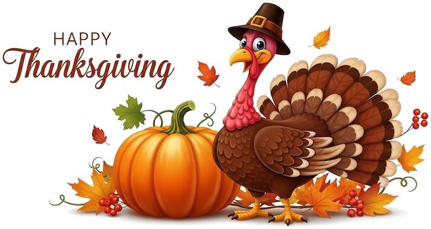
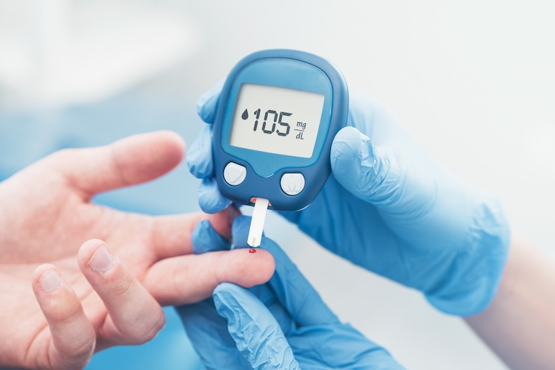

Inclusivity at the Dinner Table
Holiday Gatherings and Dinner Table Syndrome
The holiday season brings families and friends together for meals and celebrations. For people who are deaf or hard of hearing, these gatherings can also present communication barriers.
“Dinner table syndrome” is a term that describes being left out of conversation at family meals and other group gatherings. It can affect people with any degree of hearing loss, from mild to profound. Several people may talk at once. Background noise and dim lighting can make conversation hard to follow. A person may catch only part of what is said.
A few changes can help everyone take part.
For Family Members and Friends
- Ask your family member or friend who is deaf or hard of hearing what helps most.
- Offer a seat with a clear view of everyone at the table.
- Keep the room well lit so faces are easy to see.
- Turn off the television or music during the meal.
- Take turns speaking so only one person talks at a time.
- Get the person’s attention before you begin speaking.
- Let the person know when the topic of conversation changes.
- Repeat or rephrase information when asked. Avoid responding with “never mind” or “I’ll tell you later.”
For People Who Are Deaf or Hard of Hearing
- Tell your host or family ahead of time what helps you follow conversation.
- Choose a seat with a clear view of faces.
- Sit away from sources of background noise when possible.
- Check that hearing aids, cochlear implants, or other hearing devices are charged before the gathering.
- Use a speech-to-text app on a phone or tablet to caption conversation at the table.
- Ask a family member or friend to fill you in when you miss part of a conversation.
- Spend time in smaller conversations, which can be easier to follow.
- Take breaks when you need them. Following group conversation can be tiring.
Small changes can help everyone at the table share in the holiday conversation.

Native American Heritage Month
November is Native American Heritage Month. This observance honors the history, cultures, and contributions of Native American and Indigenous peoples. This month is also a time to recognize deaf and hard of hearing Native Americans as part of that history. Deaf Services Unlimited shares the stories of deaf Native leaders and community members in an article for Native American Heritage Month. The article also explains the history of Plains Indian Sign Language (PISL). According to the article, members of multiple tribal nations used PISL to communicate across spoken language differences. Deaf Services Unlimited also describes current efforts to preserve PISL and other Indigenous sign languages. Read the full article to learn more.
Diabetes Awareness Month
November is Diabetes Awareness Month. It is a good time to learn how diabetes can affect hearing health.
According to the Centers for Disease Control and Prevention (CDC), diabetes can damage nerves in many parts of the body, including the ears. Over time, high blood sugar can damage small blood vessels and nerves in the inner ear. Low blood sugar over time can affect how nerve signals travel from the inner ear to the brain. The CDC reports that both types of damage can lead to hearing loss.

The CDC also reports that hearing loss is twice as common in people who have diabetes as in people of the same age who do not. People with prediabetes have a 30 percent higher rate of hearing loss than people with normal blood sugar levels.
Hearing loss can develop slowly. Some people may not notice the change right away. The CDC lists several signs of hearing loss, including often asking others to repeat themselves, having trouble following conversations with more than one person, and having trouble hearing in noisy places. Problems with the inner ear can also affect balance.
The CDC recommends several steps to help protect hearing. Keep blood sugar as close to target levels as possible. Have hearing tested by an audiologist after a diabetes diagnosis and every year after that. Avoid other causes of hearing loss, such as loud noise. Ask a doctor whether any current medications can affect hearing.
Hearing health is an important part of diabetes care for everyone, including people who are already deaf or hard of hearing.

‘I am their eyes, ears and voice’: A Father’s Journey with His DeafBlind Sons
Fawaz Al Hasban shares what it’s like raising his two sons, Ahmad and Osama, who both have Usher syndrome. He describes how the brothers use tactile sign language and assistive technology to communicate and learn, and encourages other parents to see disability as part of human diversity.
Read the article-
NOV 17ASTra webinar - From Parent Records to Student Voice: The Power of Documentation - Webinar 11:00AM - 12:00PM MOUNTAIN TIME · 1:00PM - 3:00PM ET More Info & Registration
-
NOV 19Cincinnati Art Museum: Looking Twice (ASL Interpreted) Cincinnati, OH · 6:00PM More Info & Registration
-
NOV 21Kentucky Hands & Voices - Trivia Night & Silent Auction Louisville, KY · 5:30 PM - 8:30 PM More Info & Registration
-
DEC 19Kentucky Hands & Voices - Breakfast with Santa Bardstown, KY · 10 AM - 12 PM Registration is required · More Information
Kentucky P&A wants to hear from YOU!
Kentucky P&A is the designated protection and advocacy system for Kentucky and works to protect and promote
the rights of people with disabilities and individuals who are deaf or hard of hearing through advocacy,
education, training, information and referral, and legal servces.
Learn more about Kentucky P&A at
https://www.kypa.net or call
800-372-2988.
Your voice matters!
Kentucky Protection & Advocacy is currently planning new areas of focus for 2027, and community input is
an important part of that process. Please take a few minutes to complete the survey and share your
thoughts.
Take the survey
Moore Safe Nights — Still Accepting Applications
Free weather radios for deaf and hard of hearing Kentuckians. Partnership with Kentucky Emergency Management.
Apply now
Education Resources
These organizations offer guidance on accommodations, self-advocacy, IEPs, and educational planning for deaf and hard of hearing students from preschool through college.
Have an event for the Deaf and Hard of Hearing community?
Submit it to our calendar.